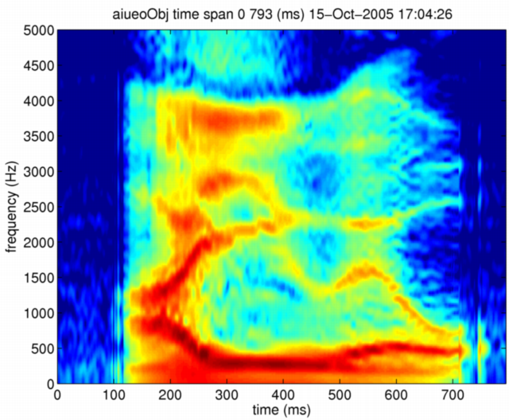
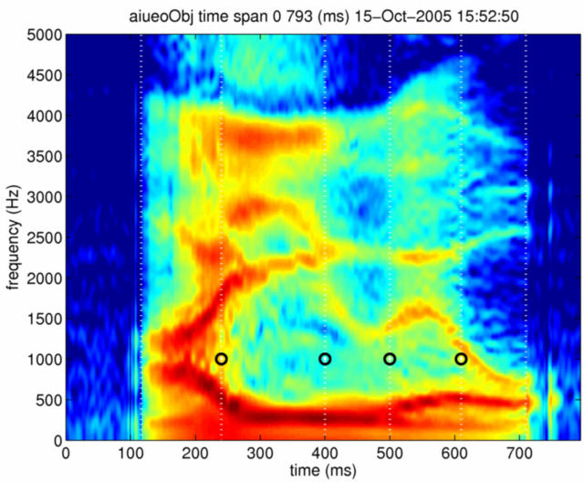
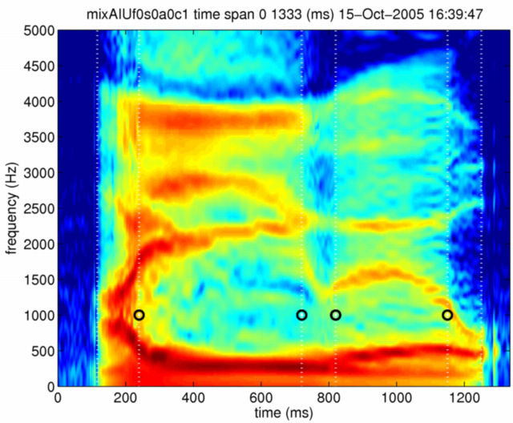

| | 時間長の制御 | Contents | Index |
ここでは，男性の発声した「あいうえお」という母音連鎖を例にとって説明します。 前と同様に，モーフィングオブジェクトを作成します。
[x,fs]=wavread('../STRAIGHTV40_003b/vaiueo2d.wav');
aiueoObj = createMobject
aiueoObj = updateFieldOfMobject(aiueoObj,'waveform',x);
aiueoObj = updateFieldOfMobject(aiueoObj,'samplingFrequency',fs);
ここで，STRAIGHT分析を行い，スペクトログラムを表示します。
aiueoObj = executeSTRAIGHTanalysisM(aiueoObj); displayMobject(aiueoObj,'anchorFrequency','aiueoObj'); axis([0 794 0 5000])

今回の例では、それぞれの母音の時間長を操作するので，まず， それぞれの母音の区間を決める必要があります。 厳密な議論をすると，どこからどこまでがどの母音に対応しているかという 設問はナンセンスなものだということになります。 しかし，ここでは，厳密な議論は避けて，便宜的にそれぞれの母音の間に境界があると考え， 境界と境界の間を，それぞれの母音の区間であると考えることにします。 スペクトログラムから視察でそのような境界を求めると， 116, 240, 400, 500, 610, 710 msの位置に設定するのが妥当に見えます。 今回は，時刻だけが重要なので、特徴点の周波数を仮に 1000Hzとして，以下のように 特徴点情報を作成します。
rawanch =[116 -10;240 1000;400 1000;500 1000;610 1000;710 -10];
116msと710msは，音声の開始と終了の位置です。 そのような性質の境界であることを示すため、それらの時刻には負の周波数を入れてあります。 この情報を用いて，先ほど作成したモーフィングオブジェクトの特徴点情報を設定します。 スペクトログラムと特徴点を表示して確認しておきます。
aiueoObj = setAnchorFromRawAnchor(aiueoObj,rawanch) displayMobject(aiueoObj,'anchorFrequency','aiueoObj'); axis([0 794 0 5000])

母音区間の長さは、特徴点の時刻の差分として求めることができます。
>> diff(aiueoObj.anchorTimeLocation)' ans = 124 160 100 110 100
ここで，2番目の区間「い」に対応する部分と 4番目の区間「え」に対応する部分の時間長を3倍にすることにします。 そのために，まず，目標とする時刻を持つオブジェクトを作成する必要があります。 以下の操作が，それらに対応します。
modaiueoObj = aiueoObj; modaiueoObj.anchorTimeLocation = cumsum([116;124 ; 160*3 ; 100 ; 110*3; 100]);
また，時間長が増加したことに対応して，目標とするオブジェクトのそれぞれの 属性に対応するデータのサイズを調整しておく必要があります。 ここでは，そのための関数fixDummyObjectSizeを用います。
modaiueoObj = fixDummyObjectSize(modaiueoObj,aiueoObj);次に，モーフィング率を制御する構造体を作成します。
ここでは，時間周波数変換のみを行いますので，以下のように設定します。
mRate.F0 =0; mRate.aperiodicity=0; mRate.spectrum=0; mRate.coordinate=1;モーフィングは，以下の命令で実行します。
ここでも，モーフィング結果を表示して確認しておきます。
mixAIUf0s0a0c1 = timeFrequencySTRAIGHTmorphing(aiueoObj,modaiueoObj,mRate,'log'); displayMobject(mixAIUf0s0a0c1,'anchorFrequency','mixAIUf0s0a0c1'); axis([0 1334 0 5000])

引き延ばされていることが分かります。 以下の命令により，この変換されたモーフィングオブジェクトから音声を合成します。
syAIUmixf0s0a0c1 = executeSTRAIGHTsynthesisM(mixAIUf0s0a0c1);
以下に，元の音声と変換された音声をリンクしておきます。 3倍という極端な変換を行ったはずですが， 「え」の区間はそれほど大きな変換が加わったようには聴こえません。 逆に「い」の区間は，3倍以上に伸びているように感じられます。 知覚は物理的実体そのものではないことを示す一例です。
| | 時間長の制御 | Contents | Index |